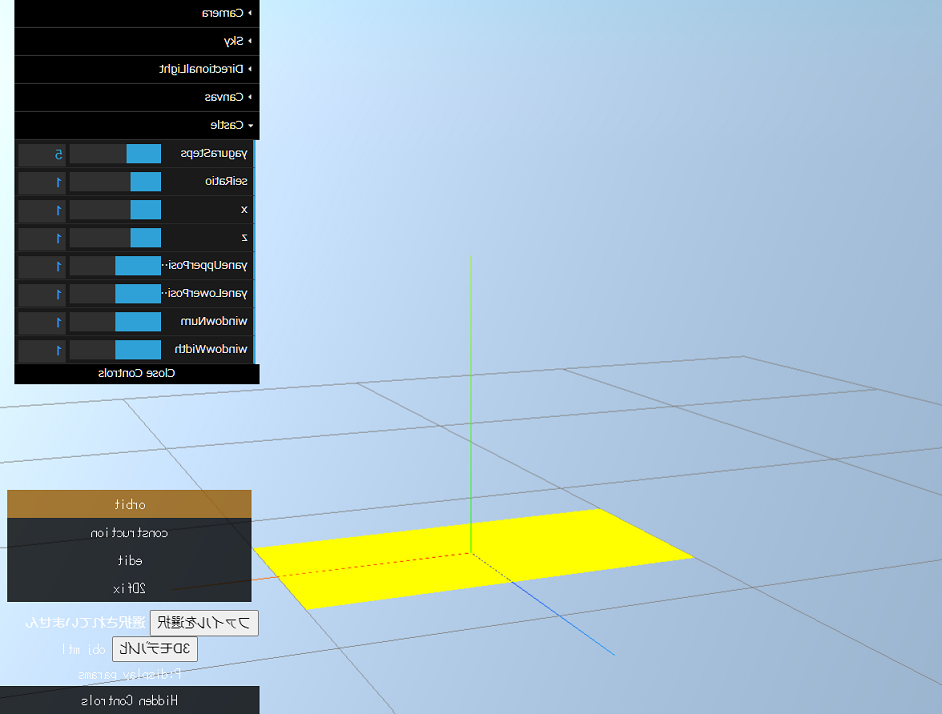

<p id="status">opencv.js 読み込み中... まだ押せない↓</p>
<button disabled id="startButton" onclick="init()">スタート</button>
<div style="position: relative;">
    
    <canvas id="canvas" width="942" height="714" style="position: absolute; top: 0px; left: 0px; transform: scaleX(-1);"></canvas>
  </div>

<script>
const button = document.getElementById("startButton");

const canvas = document.getElementById('canvas');
const context = canvas.getContext('2d');

// opencv.jsが読み込まれた後に実行される
function onOpenCvReady() {
  document.getElementById("status").innerHTML = "opencv.js 読み込み終了 もう押せる↓";
  button.disabled = false
}

function ConvertCoordinateThreeJsToUnrealEngine(p) {
    return [-1 * p[2], p[0], p[1]]
}

function ConvertCoordinateUnrealEngineToThreeJs(p) {
    return [p[1], p[2], -1 * p[0]]
}

function init() {

    // const testPoints3Drow = [
    //     [100, 0, -50],
    //     [100, 0, 50],
    //     [-100, 0, 50],
    //     [-100, 0, -50],
    //     [0, 0, 0],
    // ]

    const testPoints3Drow = [
        [-500.1565744066836, 328.4058162663621, -568.4514913614764],
        [-240.38166396734266, 505.01037789081283, 920.5973933328582],
        [-495.3755335397094, -487.55044969867174, 842.2055047016377],
        [-571.2132036056632, -63.51192478917551, -870.2203467252457],
        [776.9077243780398, 770.5123375841399, 376.3744104529976],
        [-285.21001215751744, 523.7012467978577, -595.7499334740226],
        [-372.12060241270797, -177.8529127391772, 941.8568033019121],
        [-70.6626551907492, 764.9379430218773, -28.69941731429651],
    ]

    const testPoints3D = []
    for (let i = 0; i < testPoints3Drow.length; i++) {
        const p = ConvertCoordinateThreeJsToUnrealEngine(testPoints3Drow[i])
        testPoints3D.push(...p)
    }

    // 参照2次元座標
    const testPoints2Drow = [
        [762.5261289732233, 284.71329434355863],
        [82.08905901984372, 252.49895650063758],
        [176.4354590466826, 611.3580884254677],
        [862.3118832042154, 424.6242577781339],
        [325.9029376918858, 260.47214718847965],
        [809.0827408701812, 226.2819110755879],
        [114.67690471254825, 523.436137437008],
        [559.2282944194421, 135.53507180982194],
    ]

    const testPoints2D = []
    for (let i = 0; i < testPoints2Drow.length; i++) {
        testPoints2D.push(...testPoints2Drow[i])
    }

    const rows = testPoints3D.length / 3;

    // camera matrix
    const size = {
        width: 942,
        height: 714,
    };

    const fov = 30;
    const fx = 1.0 / (2.0 * Math.tan( fov * (Math.PI/180) / 2.0 )) * size.width;
    const fy = fx;
    const cx = size.width / 2.0;
    const cy = size.height / 2.0;
    const center = [size.width / 2, size.height / 2];
    const cameraMatrix = cv.matFromArray(3, 3, cv.CV_64FC1, [
        ...[fx, 0, cx],
        ...[0, fy, cy],
        ...[0, 0, 1],
    ]);

    // [2.828751885991697, 0, 0, 0]
    // [0, 3.7320508075688776, 0, 0]
    // [0, 0, -1.0004000800160031, -1]
    // [0, 0, -2.000400080016003, 0]

    // const center = [size.width / 2.0, size.height / 2.0];
    // const cameraMatrix = cv.matFromArray(3, 3, cv.CV_64FC1, [
    //     ...[size.width, 0, center[0]],
    //     ...[0, size.width, center[1]],
    //     ...[0, 0, 1],
    // ]);

    // camera_matrix = np.array([[639.87721705,0., 330.12073612],
    //                           [  0.        , 643.69687408, 208.61588364],
    //                           [  0.        ,   0.        ,   1.        ]])

    // image matrix
    const distCoeffs = cv.Mat.zeros(4, 1, cv.CV_64FC1);
    const rvec = new cv.Mat({ width: 1, height: 3 }, cv.CV_64FC1);
    const tvec = new cv.Mat({ width: 1, height: 3 }, cv.CV_64FC1);

    // 2D points
    const imagePoints = cv.matFromArray(rows, 2, cv.CV_64FC1, testPoints2D);

    // 3D points
    const modelPoints = cv.matFromArray(rows, 3, cv.CV_64FC1, testPoints3D);

    // 移動ベクトルと回転ベクトルの初期値を与えることで推測速度の向上をはかる
    tvec.data64F[0] = 0;
    tvec.data64F[1] = -100;
    tvec.data64F[2] = -100;

    //321.54732259617987, 264.12574542194767, 788.3519175320067

    const success = cv.solvePnP(
        modelPoints,
        imagePoints,
        cameraMatrix,
        distCoeffs,
        rvec,
        tvec,
        true
    );

    const result = {
        success,
        imagePoints,
        cameraMatrix,
        distCoeffs,
        rvec, // 回転ベクトル
        tvec, // 移動ベクトル
    };

    console.log(result)

    console.log("tvec:", tvec.data64F[0], tvec.data64F[1], tvec.data64F[2])

    const rmat = new cv.Mat();
    cv.Rodrigues(rvec, rmat);

    const R = new cv.Mat();
    cv.transpose(rmat, R);

    const t = new cv.Mat();
    cv.gemm(R, tvec, -1, new cv.Mat(), 0, t)
    // -R @ tvec

    console.log(rmat.data64F[0], rmat.data64F[1], rmat.data64F[2],
        rmat.data64F[3], rmat.data64F[4], rmat.data64F[5],
        rmat.data64F[6], rmat.data64F[7], rmat.data64F[8],
    )
    console.log(t.data64F[0], t.data64F[1], t.data64F[2])
    console.log(R.data64F[0], R.data64F[1], R.data64F[2],
        R.data64F[3], R.data64F[4], R.data64F[5],
        R.data64F[6], R.data64F[7], R.data64F[8],
    )

    console.log("traw: ", ConvertCoordinateUnrealEngineToThreeJs([t.data64F[0], t.data64F[1], t.data64F[2]]))

    const xyz = cv.matFromArray(1, 3, cv.CV_64FC1, ConvertCoordinateThreeJsToUnrealEngine([100, 0, -50]))
    const xyz_ = cv.matFromArray(3, 1, cv.CV_64FC1, ConvertCoordinateThreeJsToUnrealEngine([100, 0, -50]))
    
    const R_t = rmat; // Rの転置
    const xyz__t = new cv.Mat();
    const uvz_est_ = new cv.Mat();
    const uvz_est = new cv.Mat();
    cv.subtract(xyz_, t, xyz__t)
    cv.gemm(R_t, xyz__t, 1, new cv.Mat(), 0, uvz_est_)
    cv.gemm(cameraMatrix, uvz_est_, 1, new cv.Mat(), 0, uvz_est)
    // K @ Rt @ (xyz_ - t)
    // https://showy-iguanodon-aca.notion.site/2D-5720fe51d2274809b357a8f0787dfcda

    const uvz_est_data = uvz_est.data64F
    console.log(uvz_est_data[0]/uvz_est_data[2], uvz_est_data[1]/uvz_est_data[2] )

    console.log("ans:", [688, 547])
    
    drawResultRectangle();
    drawResultAxis();

    // --------------------------------

    function drawResultRectangle() {
        const point2D = [
            new cv.Mat(),
            new cv.Mat(),
            new cv.Mat(),
            new cv.Mat()
        ];

        const point3D = [
            cv.matFromArray(1, 3, cv.CV_64FC1, ConvertCoordinateThreeJsToUnrealEngine([100, 0, -50])),
            cv.matFromArray(1, 3, cv.CV_64FC1, ConvertCoordinateThreeJsToUnrealEngine([100, 0, 50])),
            cv.matFromArray(1, 3, cv.CV_64FC1, ConvertCoordinateThreeJsToUnrealEngine([-100, 0, 50])),
            cv.matFromArray(1, 3, cv.CV_64FC1, ConvertCoordinateThreeJsToUnrealEngine([-100, 0, -50]))
        ]
        
        const jaco = new cv.Mat();

        const position = [];

        for (let i = 0; i < point3D.length; i++) {
            cv.projectPoints(
                point3D[i],
                rvec,
                tvec,
                cameraMatrix,
                distCoeffs,
                point2D[i],
                jaco
            );

            position.push(
                {
                    x: point2D[i].data64F[0],
                    y: point2D[i].data64F[1],
                }
            )
        }

        context.clearRect(0, 0, canvas.width, canvas.height);

        for (let i = 0; i < position.length; i++) {
            addSideLine(i)
            const p = ConvertCoordinateUnrealEngineToThreeJs([point3D[i].data64F[0], point3D[i].data64F[1], point3D[i].data64F[2]])
            console.log(p, position[i])
        }

        function addSideLine(i) {
            const ii = (i + 1) % 4;

            context.beginPath();
            context.lineWidth = 2;
            context.strokeStyle = "black";
            context.moveTo(position[i].x, position[i].y);
            context.lineTo(position[ii].x, position[ii].y);
            context.stroke();
            context.closePath();
        }

    }

    function drawResultAxis() {

        const endPoint2DO = new cv.Mat();
        const endPoint2DZ = new cv.Mat();
        const endPoint2DY = new cv.Mat();
        const endPoint2DX = new cv.Mat();

        const pointO = cv.matFromArray(1, 3, cv.CV_64FC1, [0.0, 0.0, 0.0]);
        const pointZ = cv.matFromArray(1, 3, cv.CV_64FC1, [0.0, 0.0, 100.0]);
        const pointY = cv.matFromArray(1, 3, cv.CV_64FC1, [0.0, 100.0, 0.0]);
        const pointX = cv.matFromArray(1, 3, cv.CV_64FC1, [100.0, 0.0, 0.0]);
        const jaco = new cv.Mat();

        cv.projectPoints(
            pointO,
            rvec,
            tvec,
            cameraMatrix,
            distCoeffs,
            endPoint2DO,
            jaco
        );
        cv.projectPoints(
            pointZ,
            rvec,
            tvec,
            cameraMatrix,
            distCoeffs,
            endPoint2DZ,
            jaco
        );
        cv.projectPoints(
            pointY,
            rvec,
            tvec,
            cameraMatrix,
            distCoeffs,
            endPoint2DY,
            jaco
        );
        cv.projectPoints(
            pointX,
            rvec,
            tvec,
            cameraMatrix,
            distCoeffs,
            endPoint2DX,
            jaco
        );

        const position = {
            origin: {
                x: endPoint2DO.data64F[0],
                y: endPoint2DO.data64F[1],
            },
            x: {
                x: endPoint2DX.data64F[0],
                y: endPoint2DX.data64F[1],
            },
            y: {
                x: endPoint2DY.data64F[0],
                y: endPoint2DY.data64F[1],
            },
            z: {
                x: endPoint2DZ.data64F[0],
                y: endPoint2DZ.data64F[1],
            },
        };

        // context.clearRect(0, 0, canvas.width, canvas.height);

        addLine(position, "x")
        addLine(position, "y")
        addLine(position, "z")
    
        function addLine(position, dir) {
            let color = "black"
            switch (dir) {
                case "x":
                    color = "red"
                    break;
                case "y":
                    color = "green"
                    break;
                case "z":
                    color = "blue"
                    break;
            }
            context.beginPath();
            context.lineWidth = 2;
            context.strokeStyle = color;
            context.moveTo(position.origin.x, position.origin.y);
            context.lineTo(position[dir].x, position[dir].y);
            context.stroke();
            context.closePath();
        }

    }

}
</script>
<script async src="opencv.js" onload="onOpenCvReady();"></script>

<!--
    参考コード： https://blog.mahoroi.com/posts/2020/05/browser-head-pose-estimation/
-->